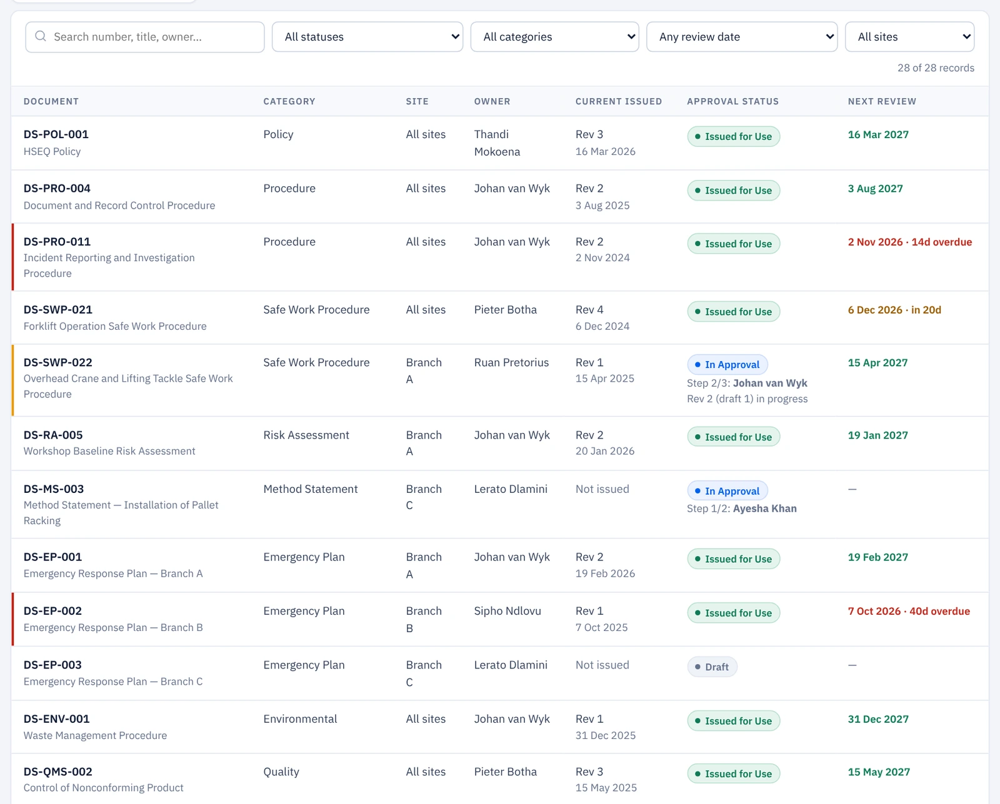
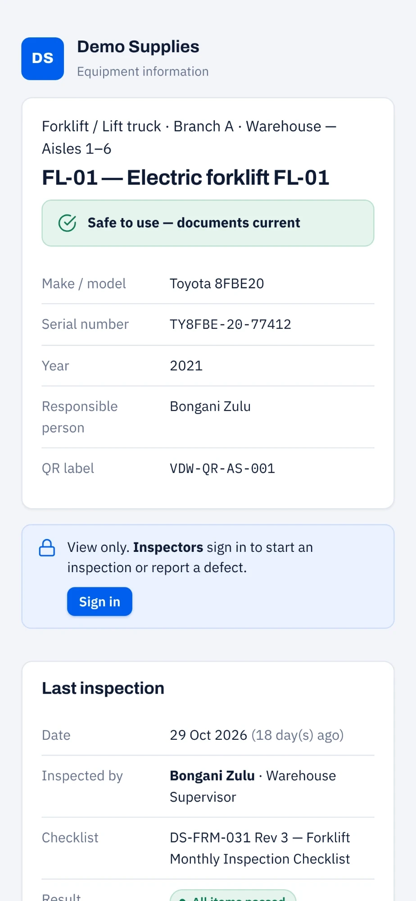
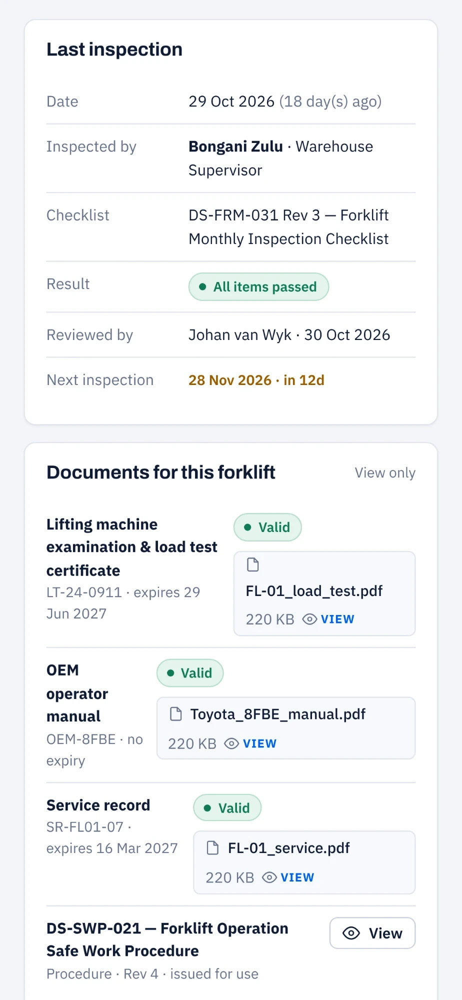
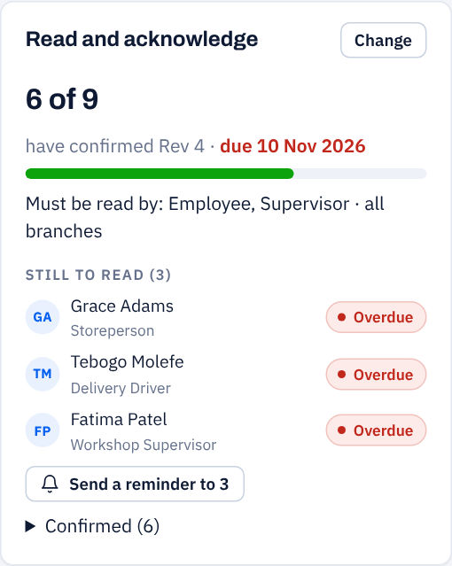

Equipment Suppliers
Supplying equipment and parts to mines, plants and industrial sites.
Every Branch on One Safety System, Managed by Us, Ready Whenever a Client Audits You
No more documents spread across branches, laptops and old files. We bring every branch onto the VDW Compliance Control System, fill the gaps, set one standard for the whole company, and then keep it current for you.
Request an Onboarding ConsultationNo obligation · Built around your branches · We manage it after onboarding
Built for suppliers to industrial & mining clients


The old way is each branch doing its own thing: one has a full safety file, another has a few loose documents, and head office has no idea which is which. When a client asks for your documents, someone spends days collecting them. We replace that by bringing every branch onto our system, to one standard, and keeping it current for you, so the right document is always available when a client asks.
Get My Branches OnboardedSupplying equipment and parts to mines, plants and industrial sites.
Distributing products to industrial clients from several branches.
Hiring out equipment to clients who audit their suppliers.
One central system
We load each branch's documents into our system, organised the same way for everyone: appointments, policies, risk assessments, procedures, registers and certificates. Every document goes through approval, carries a controlled revision and has a review date. Nothing depends on who is in charge at each branch.
Request a ConsultationBuilt around your operation
We visit your branches and build risk assessments, safe work procedures and method statements around your actual equipment, stores and processes. The result is accurate, defensible and useful on the floor.
Book a Branch Visit

Kept up to date by us
Once your branches are onboarded, we keep everything current as part of our managed service: review reminders before documents fall due, staff reading and signing what applies to them, and every appointment, certificate and action tracked, so nothing lapses between audits.
Request a Consultation“Our safety file went from a folder of loose paperwork to a system our contractors actually compliment us on. Site access approvals are no longer a scramble.”
All required OHS Act appointments for each branch, correctly drafted.
Company-wide policies and procedures, applied at every branch.
Baseline and task-specific risk assessments for each site's real hazards.
Procedures and method statements for your key tasks and equipment.
Each asset loaded with its certificates, inspection checklist and interval, and given a QR label.
Staff read and sign the documents that apply to them, and we follow up whoever is outstanding.
We give you a clear timeline once we know how many branches are involved.
We learn about your branches, your clients' audit requirements and what you already have.
We visit your branches, fill the gaps and bring each one onto our system to the same standard.
We walk management through the results, then keep every branch current as your managed compliance partner.
We've worked inside multi-branch companies where documents lived everywhere and every client audit was a scramble. That's why we built our own system, the VDW Compliance Control System, and why we run it for our clients rather than handing over files and walking away.

No. We review what you have, keep what's usable, update what's outdated and fill the gaps.
It depends on the number of branches and what's already in place. We give you a clear timeline after the first consultation.
Yes. We visit branches nationwide so the documents reflect each site's actual equipment, processes and people.
We build the system to cover what industrial and mining clients typically ask their suppliers for. If you have a specific client's checklist, send it to us and we'll build to it. We can also load your documents onto the compliance platforms your clients use, such as HSEC Online, Passport360 and ComplyWorks.
On our system, organised by branch. They remain your documents: you can ask for any of them at any time, and we send them straight away when a client audits you.
We keep everything current for you through our Managed Multi-Branch Compliance service: inspections, document upkeep, expiry tracking and monthly reports.
Free consultation · No obligation
Every client audit you scramble through costs time and puts contracts at risk. Get every branch onto our system, managed by us, and be ready whenever a client asks.
No obligation · Practical findings · Or email niel@vdwsafety.com